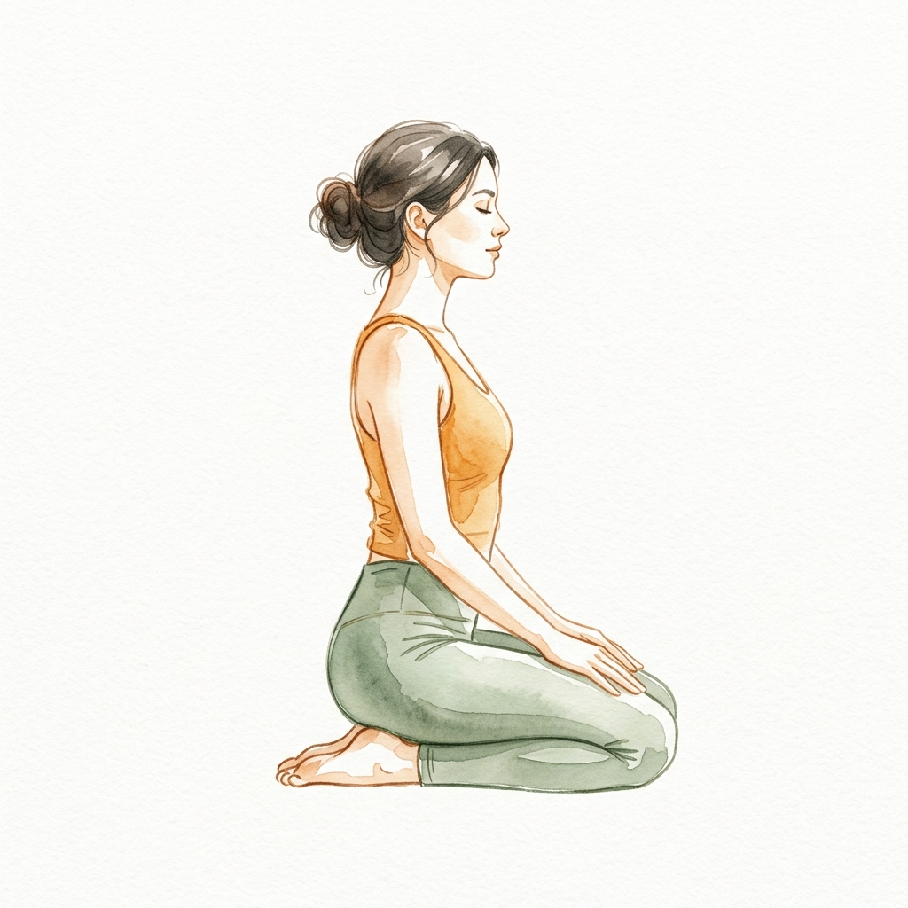
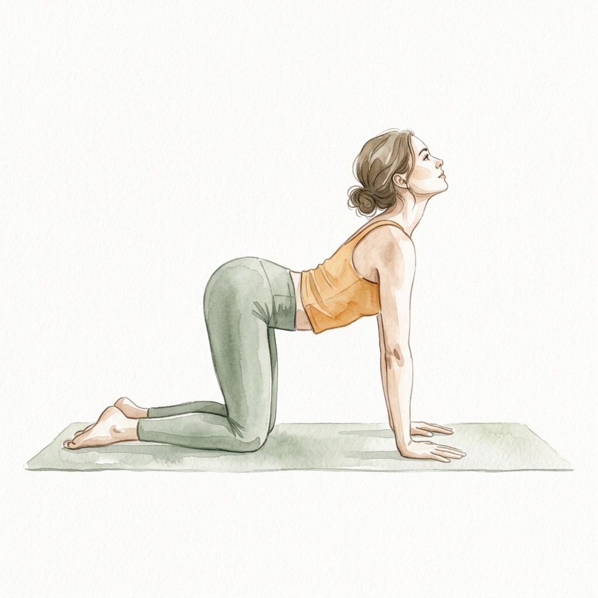
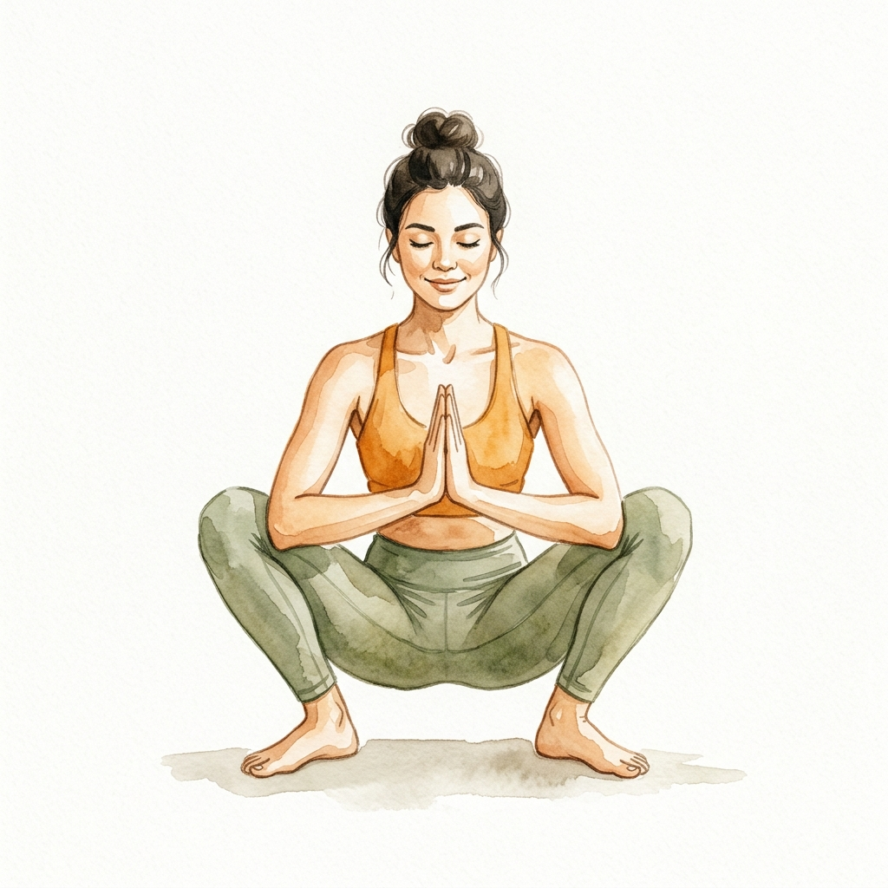
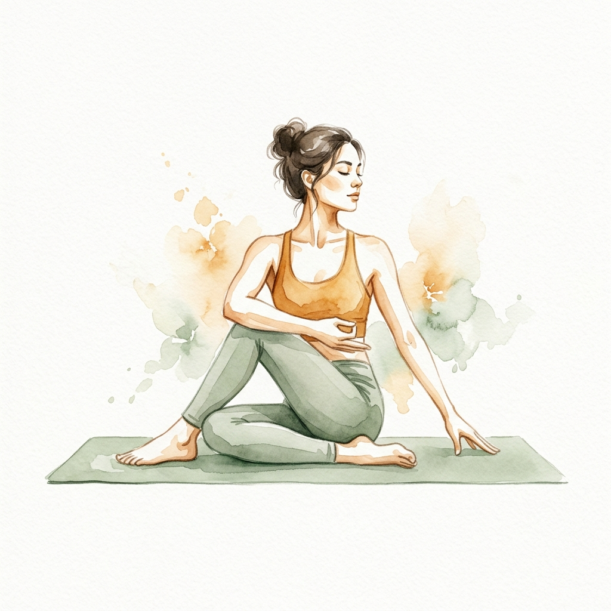
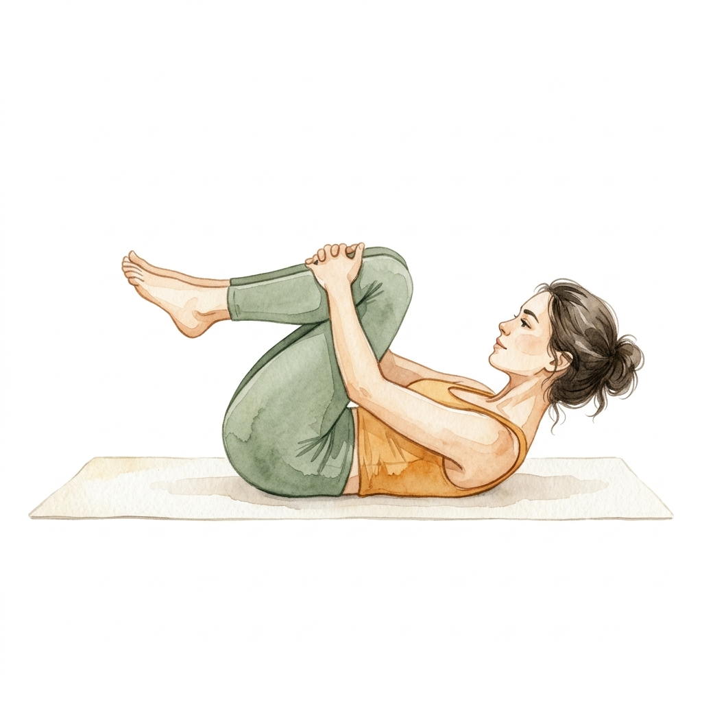
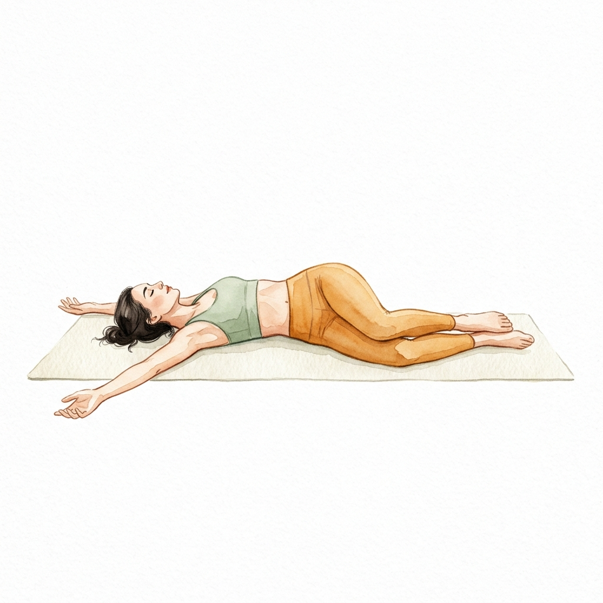

Đầy hơi sau bữa ăn, táo bón triền miên, hay cảm giác "bụng nặng trĩu" suốt cả ngày? Hệ tiêu hóa chính là "bộ não thứ hai" của cơ thể — với hơn 100 triệu tế bào thần kinh trong ruột. Khi nó "nghẽn", không chỉ bụng khó chịu mà năng lượng, tâm trạng, và giấc ngủ đều bị ảnh hưởng.
Tin tốt: Yoga là phương pháp tự nhiên hiệu quả nhất để "đánh thức" hệ tiêu hóa mà không cần thuốc. 7 tư thế dưới đây tác động trực tiếp lên dạ dày, ruột non và đại tràng thông qua cơ chế ép – thả – xoắn – nén, giúp thức ăn di chuyển nhanh hơn và giảm tích khí.
🫀 Hiểu đường đi của thức ăn — Tại sao thứ tự tư thế rất quan trọng
Thức ăn di chuyển theo đường ruột già hình chữ U ngược. Khi tập yoga cho tiêu hóa, chúng ta cần vặn sang phải trước (nén đại tràng lên), rồi vặn sang trái (nén đại tràng xuống) — đúng theo chiều nhu động ruột:
→ Vì vậy: Twist PHẢI trước, TRÁI sau = đẩy thức ăn đúng chiều ruột.
Yoga hỗ trợ tiêu hóa bằng cách nào? 🔬
Sáng sớm lúc bụng đói — lý tưởng nhất để kích thích nhu động ruột tự nhiên. Nếu tập sau ăn, đợi ít nhất 1.5–2 giờ. Duy nhất Vajrasana (tư thế Kim cương) được phép tập ngay sau khi ăn.
7 tư thế Yoga cho hệ tiêu hóa khỏe 🧘♀️

Tư thế Kim cương
Vajrasana
Tư thế DUY NHẤT trong yoga được khuyến khích tập ngay sau ăn. Quỳ gối giúp tăng lưu lượng máu đến dạ dày và ruột non (thay vì dồn xuống chân như khi ngồi ghế), đẩy nhanh quá trình tiêu hóa.
📋 Cách thực hiện
- Quỳ xuống, mông ngồi lên gót chân, mu bàn chân áp sàn
- Cột sống thẳng, vai thả lỏng, tay đặt lên đùi
- Nhắm mắt, thở bụng chậm 4–6 nhịp/phút
- 💡 Nếu đau gối: kê chăn mỏng giữa mông và gót chân

Mèo – Bò
Marjaryasana – Bitilakasana
Sự luân phiên giữa cong lưng (Cat) và trũng lưng (Cow) tạo nhịp "ép – giãn" liên tục lên khoang bụng, như đang massage dạ dày và ruột từ bên ngoài. Đặc biệt hiệu quả cho người bị đầy hơi sau ăn.
📋 Cách thực hiện
- Từ Vajrasana, chuyển sang tư thế bốn điểm — tay dưới vai, gối dưới hông
- Hít vào (Cow): Trũng lưng, ngẩng đầu, mở ngực — bụng giãn ra
- Thở ra (Cat): Cong lưng lên, cúi đầu, kéo rốn vào sát cột sống — bụng ép lại
- Di chuyển chậm, đồng bộ hơi thở. Tập trung cảm nhận bụng co giãn

Ngồi xổm sâu
Malasana
Tư thế "tự nhiên nhất của con người để đi vệ sinh" — trước khi có bồn cầu, tổ tiên chúng ta ngồi xổm! Tư thế này thẳng hàng đại tràng sigma với hậu môn (góc anorectal), giúp giải phóng ruột dễ dàng hơn đến 30%.
📋 Cách thực hiện
- Từ tư thế Mèo - Bò, bước hai chân ra ngoài hai bàn tay
- Ngồi xổm sâu, gót chân chạm sàn (kê gối nếu chưa được)
- Hai tay chắp trước ngực, khuỷu tay ép vào đầu gối trong
- Cột sống thẳng, ngực mở. Thở bụng sâu.

Vặn xoắn ngồi
Ardha Matsyendrasana
Tư thế "vắt khăn" cho nội tạng — xoắn thân ép mạnh lên gan, lách, tụy và ruột. Khi thả ra, máu tươi tràn vào "tưới" cơ quan tiêu hóa. Nhớ: vặn PHẢI trước để đẩy thức ăn đúng chiều đại tràng!
📋 Cách thực hiện
- Từ Malasana, hạ nhẹ mông xuống thảm, duỗi chân về trước
- Gập gối phải, đặt bàn chân phải bên ngoài đùi trái
- Hít vào kéo dài cột sống, thở ra vặn sang PHẢI
- Giữ 8 hơi thở → đổi bên (vặn TRÁI)

Giải phóng gió
Pavanamuktasana
Đúng như tên gọi — tư thế này ép trực tiếp lên đại tràng để đẩy khí ra ngoài. Cực kỳ hiệu quả khi bạn bị đầy hơi, chướng bụng. Đùi ép vào bụng tạo áp lực cơ học lên ruột già.
📋 Cách thực hiện
- Từ Malasana, từ từ ngồi xuống rồi nằm ngửa
- Ôm hai đầu gối vào ngực, tay đan chéo quanh ống chân
- Nhấc đầu nhẹ, trán hướng về gối — tăng áp lực lên bụng
- Lắc nhẹ sang trái-phải để "massage" lưng dưới + ruột

Vặn xoắn nằm ngửa
Supta Matsyendrasana
Phiên bản "thư giãn" của vặn xoắn — nhưng chiều sâu xoắn lại lớn hơn nhờ trọng lực kéo gối xuống. Đây là "đòn kết thúc" cho hệ tiêu hóa: ép – thả nốt phần đại tràng sigma bên trái.
📋 Cách thực hiện
- Nằm ngửa, kéo hai gối về ngực
- Đổ hai gối sang PHẢI trước — tay trái giữ trên gối, tay phải dang ngang
- Giữ vai trái chạm sàn, mắt nhìn trái
- 8 hơi thở → đổ gối sang TRÁI. Luôn vặn PHẢI trước!
Thở bụng sâu (kết thúc)
Diaphragmatic Breathing
Kết thúc bằng thở bụng — cơ hoành di chuyển lên xuống chính là "máy bơm" cho nội tạng. Mỗi hơi thở bụng tạo nhịp massage nhẹ nhàng lên dạ dày, gan, và ruột. Thực hiện trong Vajrasana hoặc nằm ngửa.
📋 Cách thực hiện
- Ngồi Vajrasana hoặc nằm Savasana, hai tay đặt lên bụng
- Hít vào 4 nhịp: Bụng phồng lên, đẩy tay ra
- Thở ra 6 nhịp: Bụng xẹp xuống, rốn kéo vào sát cột sống
- Thở ra DÀI hơn hít vào → kích hoạt phó giao cảm → ruột co bóp nhiều hơn
Trình tự tập gợi ý — 20 phút mỗi sáng ⏰
Dưới đây là flow hoàn chỉnh — di chuyển mượt mà từ quỳ xuống nằm, không giật cục:
Quỳ trong Kim cương, hai tay đặt lên bụng. Thở bụng 10 nhịp để "khởi động" hệ tiêu hóa. Cảm nhận bụng phồng xẹp dưới tay.
Từ quỳ, chuyển sang bốn điểm. 12 lần Cat-Cow chậm rãi, tập trung vào nhịp bụng ép – giãn theo hơi thở.
Từ Mèo – Bò, bước hai chân ra ngoài tay và hạ mông xuống Malasana. Giữ 1–3 phút. Lắc nhẹ sang hai bên. Tư thế "thiên nhiên" nhất cho đường ruột.
Nhẹ nhàng đặt mông xuống thảm, duỗi chân thực hiện Ardha Matsyendrasana. Bên PHẢI trước 8 hơi thở, rồi bên TRÁI 8 hơi thở. Thở ra khi vặn sâu thêm.
Từ tư thế ngồi vặn xoắn, từ từ nằm ngửa ra thảm. Ôm gối vào ngực, nhấc đầu. 3 set x 1 phút. Thở ra thật dài trong mỗi lần ép.
Đổ gối sang PHẢI 8 hơi thở → sang TRÁI 8 hơi thở. "Đòn kết" ép nốt đại tràng sigma.
Nằm ngửa hoặc ngồi Vajrasana, 20 hơi thở bụng sâu. Để hệ tiêu hóa "ghi nhớ" nhịp vận động mới.
- KHÔNG tập khi bụng đầy (trừ Vajrasana) — đợi tối thiểu 1.5 giờ sau ăn
- Nếu bị trào ngược dạ dày (GERD): tránh các tư thế gập sâu, thay bằng giữ lâu hơn ở Vajrasana
- Phụ nữ mang thai: tránh tư thế ép bụng mạnh (Pavanamuktasana, vặn xoắn sâu)
- Nếu bạn bị thoát vị bẹn: KHÔNG tập Malasana và Pavanamuktasana
- Uống 1 ly nước ấm trước khi tập 15 phút để kích thích nhu động ruột
- Vấn đề tiêu hóa kéo dài >2 tuần: cần khám bác sĩ kết hợp yoga
Thói quen hỗ trợ hệ tiêu hóa bên ngoài thảm yoga 🌿
- 📌 Uống nước ấm + chanh/gừng mỗi sáng trước khi tập
- 📌 Ăn chậm, nhai kỹ — mỗi miếng nhai 20–30 lần
- 📌 Đi bộ nhẹ 10 phút sau bữa ăn thay vì nằm/ngồi ngay
- 📌 Tránh ăn quá no — quy tắc Ayurveda: 1/3 thức ăn, 1/3 nước, 1/3 để trống
- 📌 Ngồi Vajrasana 5 phút sau mỗi bữa ăn — thay cho ngồi ghế hoặc nằm
Tập 7 tư thế này mỗi sáng trong 14 ngày liên tục. Ghi lại cảm nhận hàng ngày: mức đầy hơi (1–10), số lần đi vệ sinh, chất lượng tiêu hóa. Hầu hết học viên của Mây báo cáo cải thiện rõ rệt từ ngày thứ 5–7.